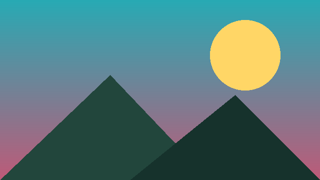

Drag Anything

웹 콜라주는 페이지에서 필요한 조각만 끌어다 모아 나만의 문서를 만드는 도구입니다. 이 문단은 부모 선택자(.article .card p)로만 스타일이 지정되어 있어서, 그냥 떼어내면 모양이 바뀌는 대표적인 경우예요.
“가져온 조각이 원본과 똑같아 보여야 한다.”

웹 콜라주는 페이지에서 필요한 조각만 끌어다 모아 나만의 문서를 만드는 도구입니다. 이 문단은 부모 선택자(.article .card p)로만 스타일이 지정되어 있어서, 그냥 떼어내면 모양이 바뀌는 대표적인 경우예요.
“가져온 조각이 원본과 똑같아 보여야 한다.”